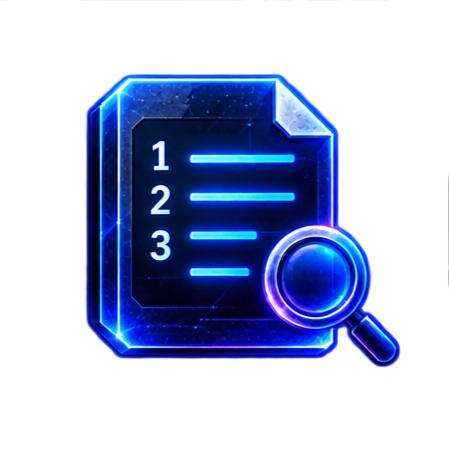

XIOM project -- beta
live demo
Pulse
The official XIOM web backend: a single-binary HTTP/1.1 service built with the XIOM toolchain and running behind the front proxy on loopback by design. Open source, MIT OR Apache-2.0. Pulse is a separate project from the language itself; its product home is xiom-pulse.com and the live demo runs at xiom-pulse.com/demo/.
Pulse is in beta. The numbers below come from the release test suites, and the limitations are listed just as plainly.
Package: xiom.pulse -- the embeddable protocol core, codename Beacon (live on the registry).
Standalone: Station -- the service on this site, consuming the same core (live, beta). One core, never a fork.
What works today
Tested on all five platforms (Linux x64 and ARM64, Windows x64, macOS Intel and Apple Silicon): HTTP smoke 135/135 on both backends (jsonl + kv), crash/reopen 6/6, migrations 21/21, SQL 53/53, streams 83/83 unit + 20/20 live + 11/11 auth. CI is green on all five. The 0.2.2 download ships Linux x64 and Windows x64.
Single binary
One process, no runtime dependencies; MIT OR Apache-2.0.
HTTP/1.1 requests
Parsing and request limits, exercised by the smoke suites on both platforms.
Sessions and JWT
JWT HS256 sessions, CSRF protection and opt-in CORS.
Smuggling guard
Chunked request decoding, a TE/CL smuggling guard, and schema validation on the auth routes.
Crash-safe store
Append store by default; optional embedded xiom.kv backend (45m soak green, hard-kill reopen intact).
Rate limiting
Verified on Windows and Linux.

Access log and audit trail
JSON access log and an audit trail for privileged actions.
Prometheus metrics
Prometheus text endpoint, restricted at the proxy.
TLS through nginx
11/11 end-to-end on Windows and Linux.
Docker image
Verified from deploy/Dockerfile.
Loopback by design
Binds on loopback behind the front proxy, by design.
Load soak
1h: 13,198/13,198 requests, 0 errors; 64 simultaneous connections served.
Also included: SSE and WebSocket streams with opt-in auth, static site mode, multipart uploads, an OpenAPI 3.1 document and CLI tooling.
Honest beta -- what it does not do yet
- Beta: not production-ready, not hardened, not battle-tested.
- Memory use grows under sustained load (about 16.5 KB per request on the v0.65.5 build, down from 22.3 on v0.65.4 and 44-50 on v0.65.1). Short demos are fine; long high-rate runs should cap and restart the process. The 24-hour soak gate is still ahead.
- No receive timeouts yet, so avoid exposing it directly (the front proxy mitigates).
- No graceful shutdown drain yet; restarts heal the store.
- No credentials or role-based access control: the login is a demo, not a security boundary.
- No HTTP/2, SSE or WebSockets. TLS and proxying are the front proxy's job.
- macOS and ARM64 packages pass the gates but are not in the 0.2.2 download; they ship with the next release.
One-line install
The installer downloads the latest release, verifies its SHA256, installs it for your user (no administrator or root needed) and puts a pulse command on your PATH. Downloads are available for Linux x64 and Windows x64 today; the macOS and ARM64 packages are built and gate-tested but are not in the 0.2.2 download.
# Windows PowerShell
irm https://xiom-pulse.com/install.ps1 | iex
# Linux
curl -fsSL https://xiom-pulse.com/install.sh | shWhere it lands: %LOCALAPPDATA%\pulse on Windows (-NoPath skips the PATH edit; reopen the terminal afterwards) and ~/.local/share/pulse on Linux, with ~/.local/bin/pulse linked. It lands as both pulse and the original pulse_app name. Read install.ps1 or install.sh before piping if you prefer; afterwards pulse --version confirms the build. Configuration, the HTTP API and operations are covered in the documentation.
Try it live
The live demo at xiom-pulse.com/demo/ runs against the live Pulse service (the API is proxied same-origin); its interactive page exercises the service's endpoints from the browser -- health, version, echo and the crash-safe event store, no keys.
Downloads
Downloads are published on GitHub and mirrored at dl.xiom-lang.org/pulse.
Roadmap
Pulse is hardening toward a production-grade 1.0. The phases below are the plan; the current release and its limitations are above.
Now: 0.2.2, five gated platforms, the first published benchmark baseline, and 16.5 KB per request under load -- hardening toward 1.0.
| Phase | Focus | Status |
|---|---|---|
| 0 -- Protocol core | Hardened HTTP/1.1, auth, stores, streams. | Shipped |
| 1 -- Release engineering | The 0.2.x fleet, the benchmark baseline and the parity tracker. | Shipped |
| 2 -- Toolchain consolidation | All five platforms green and packaged; memory 46 -> 22.3 -> 16.5 KB per request. | Current |
| 3 -- PULSE 1.0 | Flat memory (24 hours at 100 req/s, RSS under 256 MB), independent review, fuzzing, SBOM and reproducible releases, one external pilot, operator guides, a process supervisor. | Next 12 months |
| 4 -- Post-1.0 | The top-tier path: TLS, HTTP/2 and HTTP/3, compression, more workers, OIDC, ecosystem and audit cadence. | Planned |
Production grade means proven: flat memory under sustained load, reviewed security, reproducible releases, documented operations, external adoption and scale-out -- each with evidence. Until then Pulse stays in beta.
What is next
- Work continues on memory reclamation and a 24-hour soak; 0.3.0 is in preparation.
- Next for realtime: WebSocket compression (permessage-deflate) and subprotocol negotiation.
- The live demo runs at xiom-pulse.com/demo/.
Beta until the limitations above are cleared.